Data Viz for AAAS
A Science-y look at Data Visualization
Me
- Alex, hi.
- Data Scientist @ Urban Institute
- Big Data Statistics w/ Spark
- Natural Language Processing
- Machine Learning
- Professor of Data [Viz & Science] @ JHU & GU
- Data Viz in R
- Advanced Data Viz in D3
- Data Science
Disclaimer:
My strongest credential as a scientist is owning this coffee mug:
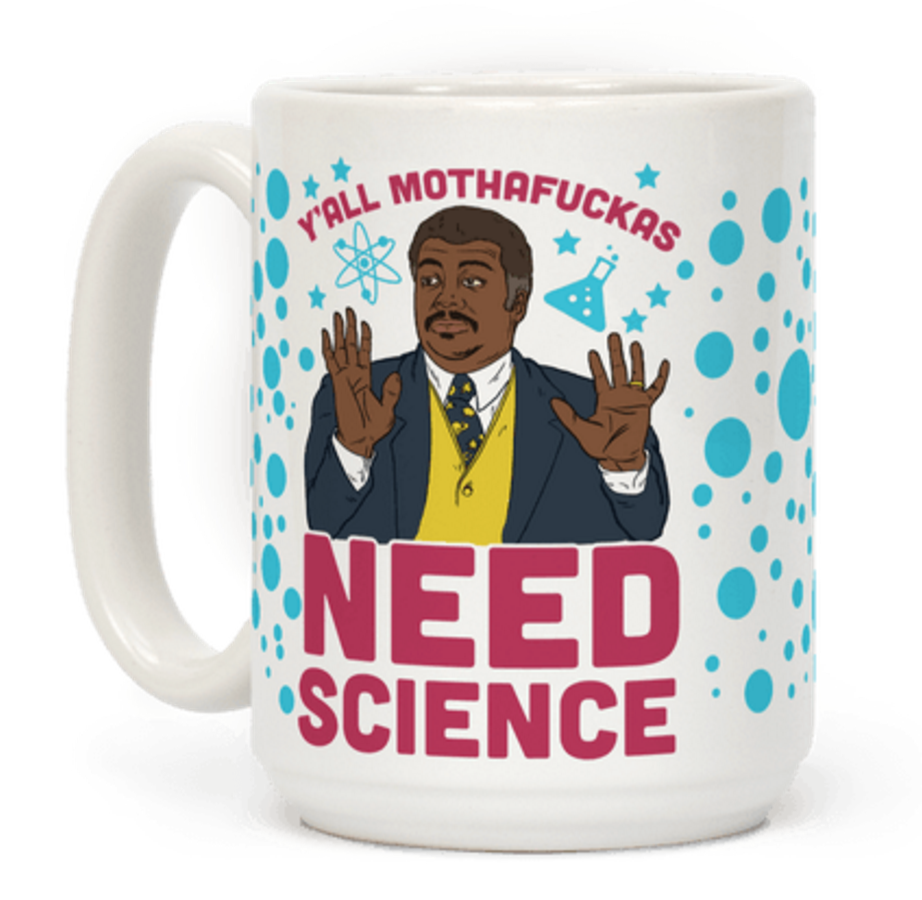Tonight
- Bad Graphs -
And What do we really know about data viz? - Intro to ggplot2
- Questions?
Bad Graphs
And What We Can Learn From Them

All these graphs were misusing their visual encodings - the most common type of data visualization abuse.
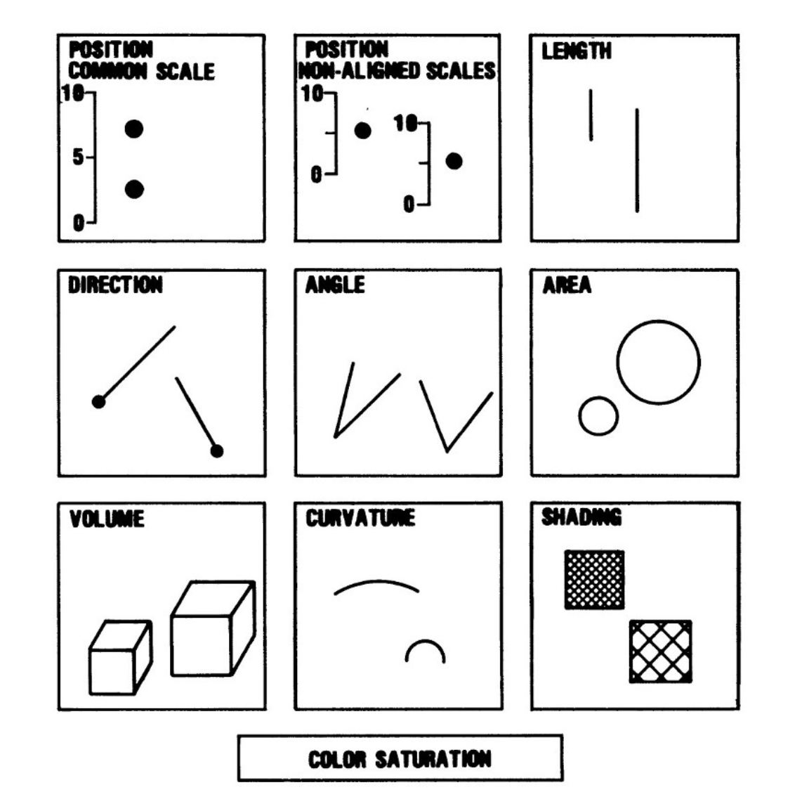
And we have a sense of which visual encodings are best.
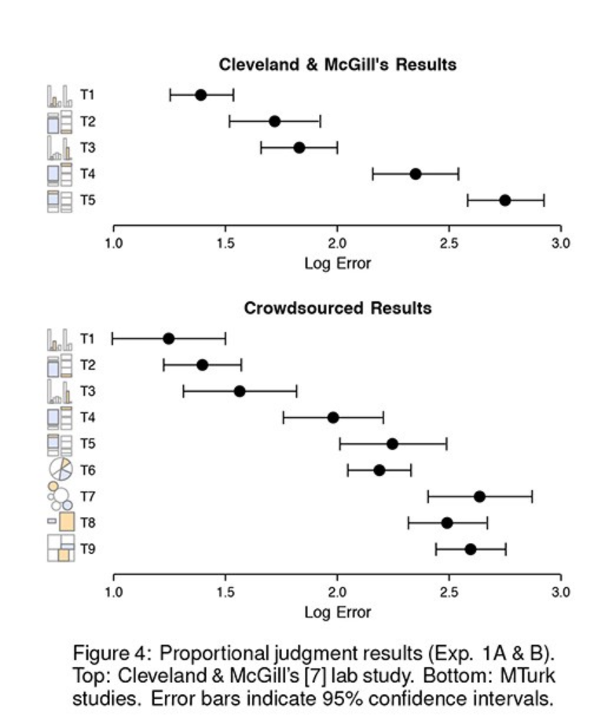
Check out Stephen Few's book "Now You See It" for more.
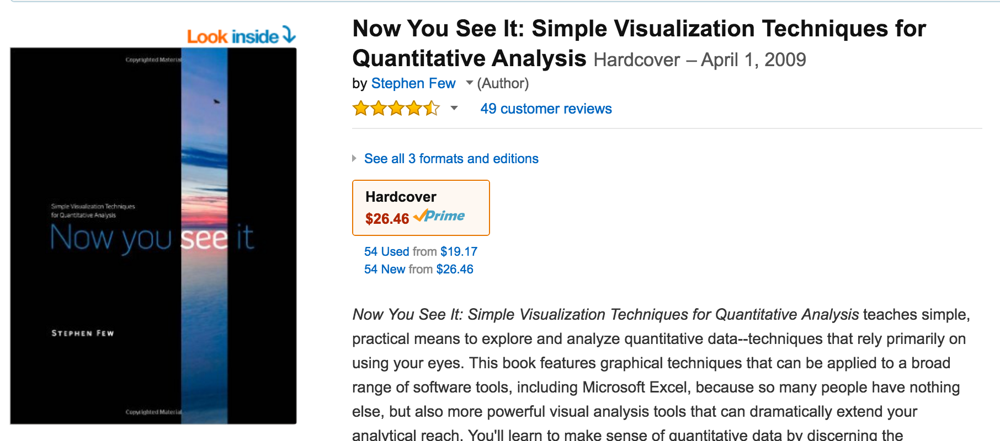Or his blog, Perceptual Edge

"The eye and the visual cortex form a massively parallel processor that provides the highest bandwidth channel into human cognitive centers"
- Colin Ware
"Serial processing and the parallel-lines illusion: Length contrast through relative spatial separation of contours" - Kevin Jordan and Diane Schiano, 1986.
This is tough, since color can be awesome.
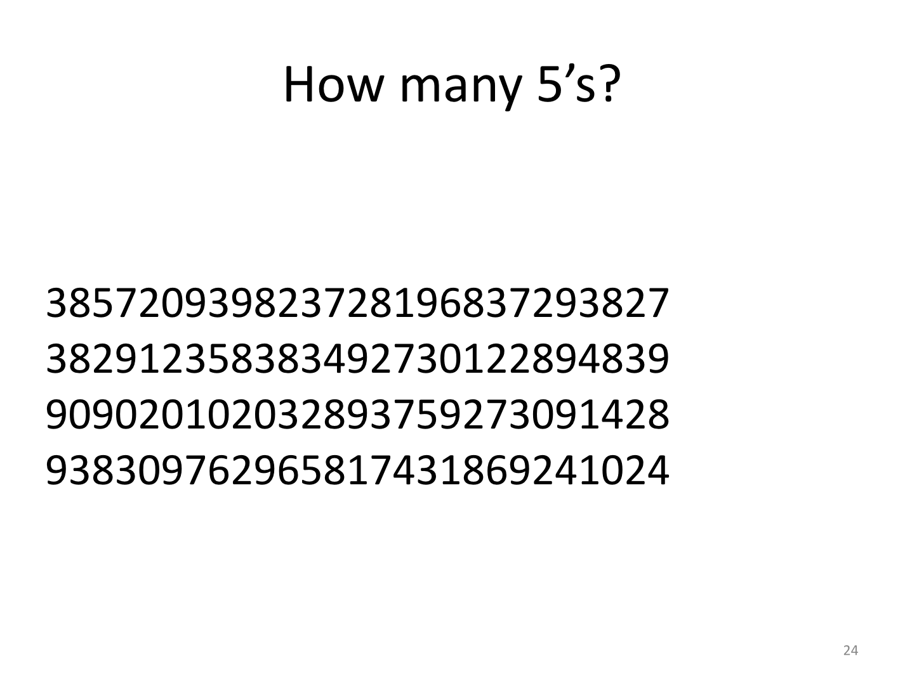We consider color hue to be pre-attentive.
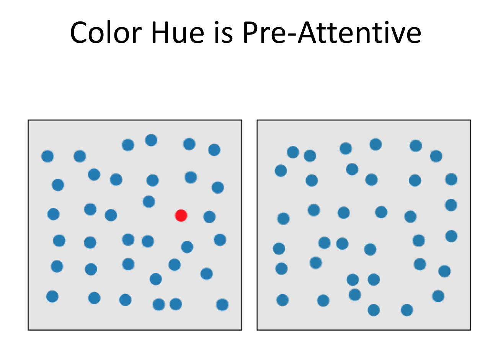But be careful with crowding effects...
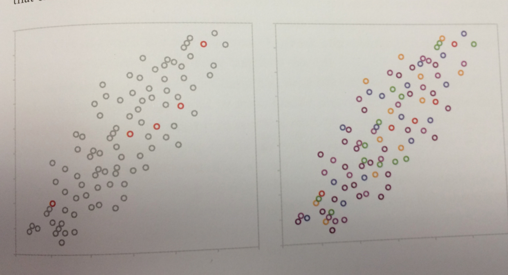More: "Toward a Perceptual Science of Multidimensional Data Visualization: Bertin and Beyond" by Marc Green
So who knows.
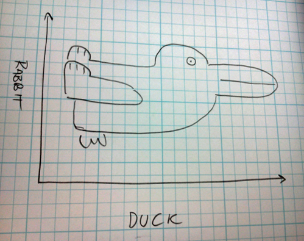Creating perceptually linear color scales is really hard.
Visible Spectrum of Light
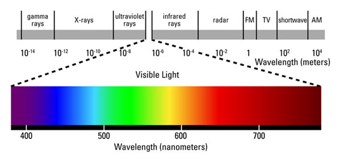Wavelength
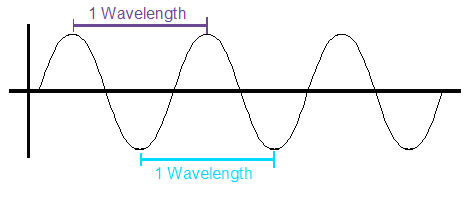Wait - So How is there a Color Wheel?
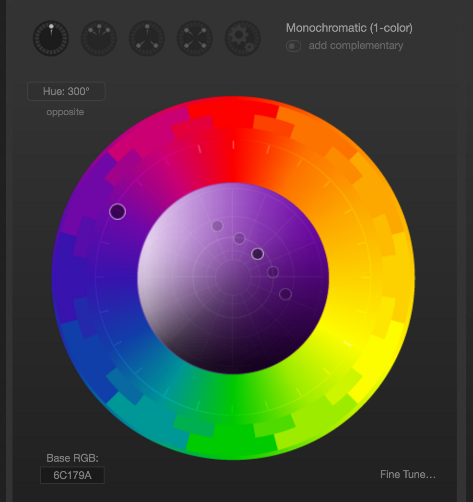Cones are specialized cells for detecting color.
But not all colors are equally weighted.
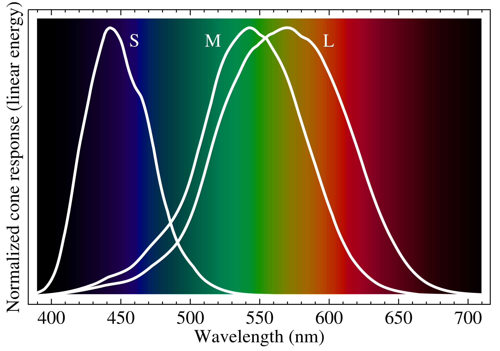It matters that there are more red and green cones than blue cones.
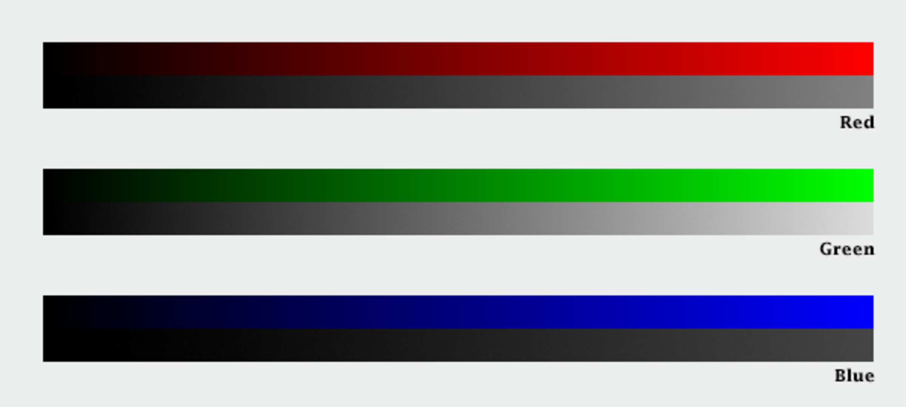It also matters that we percieve light on a logarithmic scale.
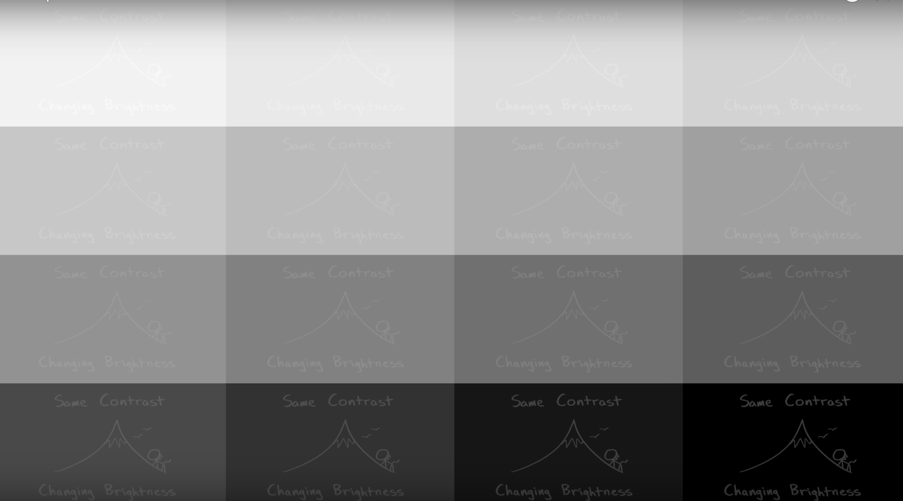Remember the three dimensions of color.
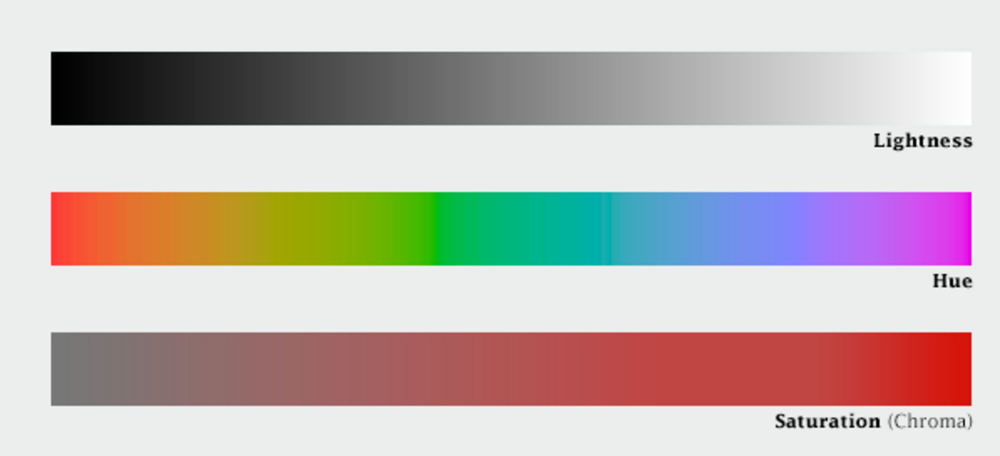And the interplay between those dimensions.
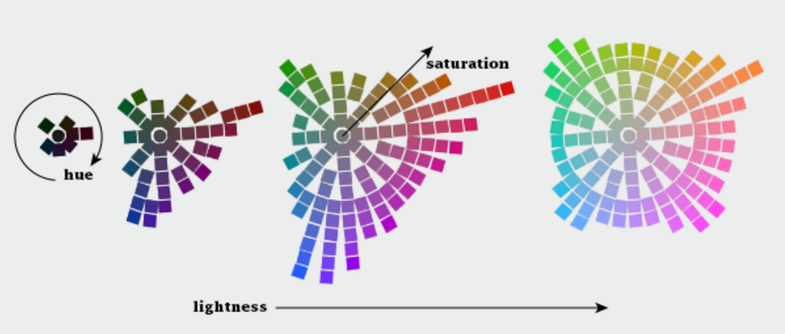Plus computers don't play by our rules

So, creating color scales is really hard.
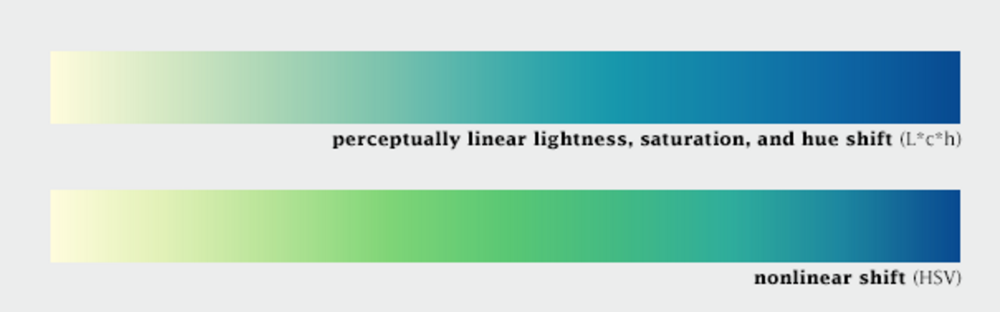Which is why we shouldn't do it.
Thank Jebus for Cynthia Brewer
More info: Subtleties of Color
More Resources:
Design Resources:
Data Driven Documents
Created by:
While at Stanford's CS department, they presented a paper introducing D3 to the 2011 InfoVis Conference.